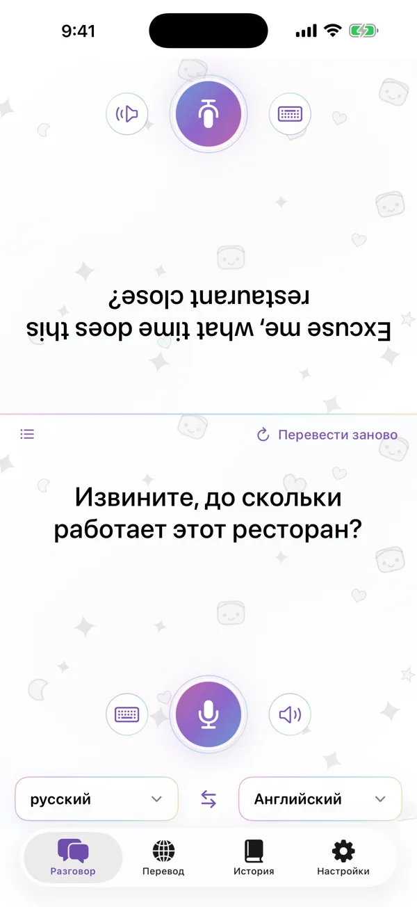

Диалог лицом к лицу
Экран делится на две части, и половина собеседника переворачивается, так что телефон можно положить между вами. Говорите или печатайте — каждый читает перевод на своём языке.
- Распознавание речи на устройстве
- Повтор любой реплики
- Озвучивание перевода